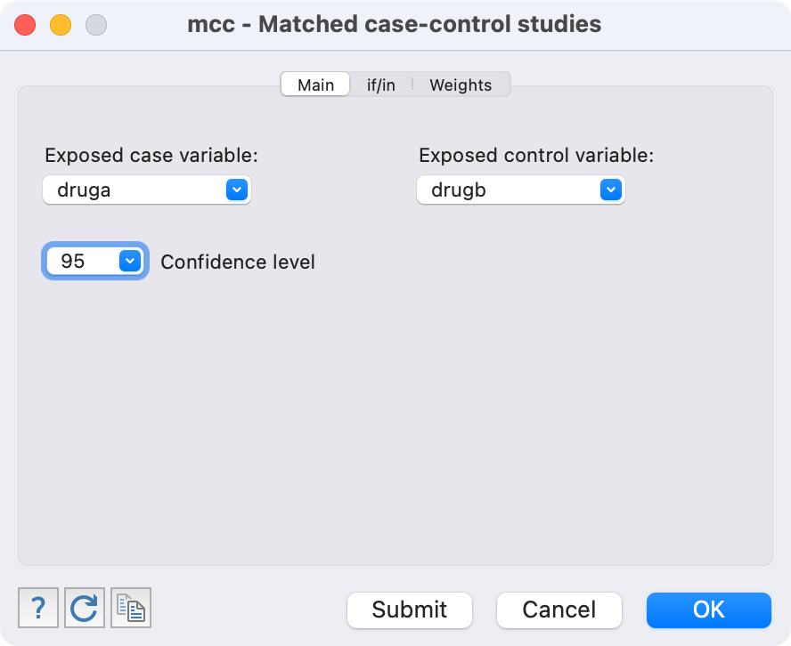

| Negative at follow-up | Positive at follow-up | Total | |
|---|---|---|---|
| Negative at baseline | a | b | a + b |
| Positive at baseline | c | d | c + d |
| Total | a + c | b + d | N |
Learning objectives
By the end of this module you will be able to:
- Use and interpret the appropriate test for testing associations between categorical data;
- Conduct and interpret an appropriate test for independent proportions;
- Conduct and interpret a test for paired proportions;
Optional readings
Kirkwood and Sterne (2001); Chapter 17. [UNSW Library Link]
Bland (2015); Chapter 13. [UNSW Library Link]
Acock (2010); Section 7.6.
7.1 Introduction
In Module 6, we estimated the 95% confidence intervals of proportions and measures of association for categorical data and conducted a significance test comparing a sample proportion to a known value.
When both the outcome variable and the exposure variable are categorical, a chi-squared test can be used as a formal statistical test to assess whether the exposure and outcome are related. The P-value obtained from a chi-squared test gives the probability of obtaining the observed association (or more extreme) if there is in fact no association between the exposure and outcome.
In this Module, we also include tests for a difference in proportion for paired data.
7.1.1 Worked Example
We are using the randomised controlled trial as given in Worked Example 6.4 on the nauseating side effect of a drug.
The research question is whether the active drug resulted in a different rate of nausea than the placebo drug. This is equivalent to testing whether there is an association between nausea and type of drug received (active or placebo). Thus, we will test the null hypothesis that the experience of nausea and the treatment are not related to one another. The null hypothesis is:
- H0: The proportion with nausea in the active drug group is the same as the proportion with nausea in the placebo drug group.
The alternative hypothesis can be stated as:
- Ha: The proportion with nausea in the active drug group is different to the proportion with nausea in the placebo drug group.
7.2 Chi-squared test for independent proportions
A chi-squared test is used to test the null hypothesis that of no association between two categorical variables. First a contingency table is drawn up and then we estimate the counts of each cell (i.e. a, b, c and d) that would be expected if the null hypothesis was true. The row and column totals are used to calculate expected counts in each cell of the contingency table as follows:
Expected count = (Row count × Column count) / Total count
Statistical software will do this for us, as described in the Stata or R sections in this Module.
A chi-squared value is then calculated to compare the expected counts (E) in each cell with the observed (actual) cell counts (O). The calculation is as follows:
\(\chi ^ 2 = \sum \frac{(O - E)}{E} ^2\)
with [Number of rows \(-\) 1] \(\times\) [Number of columns \(-\) 1] degrees of freedom.
As for many statistics, the deviations between the observed and expected values are squared to prevent the negative and positive values balancing one another out.
If the expected counts are close to the observed counts, the chi-squared statistic will be close to zero, and the P-value will be close to 1. The larger the difference between the observed and expected counts, the larger the chi-squared statistic becomes (and the smaller the P-value). A large chi-squared statistic provides more evidence of an association between the exposure and outcome.
7.2.1 Assumptions for using a Pearson’s chi-squared test
The assumptions that must be met when using Pearson’s chi-squared test are that:
- each observation must be independent;
- each participant is represented in the table once only;
- at least 80% of the expected cell counts should exceed a value of five;
- all expected cell counts should exceed a value of one.
The first two assumptions are dictated by the study design. The last two assumptions relate to the numbers in the cells and should be explored when running the test. There should not be too many cells with low expected counts.
7.2.2 Worked Example 7.1
We will revisit Worked Example 6.4, investigating the relationship between nausea and drug exposure:
| Nausea | No nausea | Total | |
|---|---|---|---|
| Active | 15 (30%) | 35 (70%) | 50 (100%) |
| Placebo | 4 (8%) | 46 (92%) | 50 (100%) |
| Total | 19 (19%) | 81 (81%) | 100 (100%) |
We can see from the row percentages that 8% of patients in the placebo group experienced nausea compared to 30% of patients in the active group. If no association existed, we would expect to find approximately the same percent of patients with nausea in each group. Statistical software can calculate the values we would expect if there was no association between nausea and drug exposure (i.e. the expected counts):
| Nausea | No nausea | Total | |
|---|---|---|---|
| Active | 9.5 | 40.5 | 50 |
| Placebo | 9.5 | 40.5 | 50 |
| Total | 19 | 81 | 100 |
For the data being considered from Worked Example 7.1 all cells have an expected count greater than 5 and that the minimum cell count is 9.5. Therefore, it is appropriate to use the Pearson’s Chi-Squared test. Note that the ‘Expected’ counts are higher for the groups with ‘No nausea’ because ‘No nausea’ is more prevalent in the sample than ‘Nausea’.
The chi-squared statistic is calculated as 7.86 with 1 df, giving a P-value of 0.005. Combining these results with the estimated relative risk (from Module 6), we can state:
The proportion with nausea in those who received the active drug is 30%, compared to 8% in those who received the placebo drug. Nausea was more frequent in those who received the active drug (Relative Risk = 3.75, 95% CI: 1.34 to 10.51). There is strong evidence that the proportion with nausea differs between the two groups (\(\chi ^2\) = 7.86 with 1 df, P=0.005).
7.2.3 Fisher’s exact test
If small expected cell counts are present, Fisher’s exact test can be used instead. More information on Fisher’s exact test can be found in Chapter 13 of An Introduction to Medical Statistics, Bland (2015), or Section 17.3 of Essential Medical Statistics, Kirkwood and Sterne (2001). The computation of Fisher’s exact test is complex, and best conducted by statistical software.
A reasonable question could be posed: why not conduct Fisher’s exact test by default? The answer to this is complex.
Fisher’s exact test has quite a restrictive assumption: we assume that the totals of the rows and columns are fixed before we conduct the study.
From Worked Example 7.1, this would be saying that we knew we would end up with 50 people in the active treatment arm, and 50 people in the placebo. This seems reasonable, we can design our study to randomise equal groups. However, Fisher’s exact test also assumes that we know we will obtain 19 people with nausea and 81 people without nausea. We cannot possibly know this before we do the study.
In the case where we cannot assume that the totals of the rows and columns are fixed before we conduct the study, it can be shown that Fisher’s exact test will be conservative (we will be less likely to reject the null hypothesis when it is false, or in other words, the P-value will be larger than it should be).
While there are other tests that perform better than Fisher’s exact test, most of the time we live with this conservative test when we have to (i.e. for small expected cell counts) because Fisher’s exact test is so widely known.
Pragmatically, we use the standard (Pearson) chi-square when we can, and Fisher’s exact test only when we have small expected cell counts.
7.3 Chi-squared tests for tables larger than 2-by-2
Chi-squared tests can also be used for tables larger than a 2-by-2 dimension. When a contingency table larger than 2-by-2 is used, say a 4-by-2 table if there were 4 exposure groups, the Pearson’s chi-squared can still be used.
7.3.1 Worked Example 7.2
The files mod07_allergy.dta and mod07_allergy.rds contain information about the severity of allergic reaction, coded as absent, slight, moderate or severe. We can test the hypothesis that the severity of allergy is not different between males and females. To do this we can use a two-way tabulation to obtain Table 7.3 which shows the counts, expected counts and the percent of females and males who fall into each severity group for allergy. The table shows that the percentage of males is higher in each of the categories of severity (slight, moderate, severe) than the percentage of females.
Table 7.3: Allergy data
| Sex | Non-allergenic | Slight allergy | Moderate allergy | Severe allergy | Total |
|---|---|---|---|---|---|
| Female | 150 (62.0%) | 50 (20.7%) | 27 (11.2%) | 15 (6.2%) | 242 (100%) |
| Male | 137 (53.1%) | 70 (27.1%) | 32 (12.4%) | 19 (7.4%) | 258 (100%) |
| Total | 287 (57.4%) | 120 (24.0%) | 59 (11.8%) | 34 (6.8%) | 500 (100.0%) |
| Sex | Non-allergenic | Slight allergy | Moderate allergy | Severe allergy | Total |
|---|---|---|---|---|---|
| Female | 138.9 | 58.1 | 28.6 | 16.5 | 242.0 |
| Male | 148.1 | 61.9 | 30.4 | 17.5 | 258.0 |
| Total | 287.0 | 120.0 | 59.0 | 34.0 | 500.0 |
The Pearson chi-squared statistic is calculated as 4.31, with 3 degrees of freedom, providing a P-value of 0.23. Therefore, there is little evidence of an association between gender and the severity of allergy.
7.4 McNemar’s test for categorical paired data
If a binary categorical outcome is measured in a paired study design, McNemar’s statistic is used. This statistic is a form of chi-square applied to a paired situation. A Pearson’s chi-squared test cannot be used because the measurements are not independent. However, McNemar’s test can be used to assess whether there is a significant change in proportions between two time points or between two conditions, or whether there is a significant difference in proportions between matched cases and controls.
For McNemar’s test, the data are displayed as shown in Table 7.4. Cells ‘a’ and ‘d’ called concordant cells because the response was the same at both baseline and follow-up or between matched cases and controls. Cells ‘b’ and ‘c’ are called discordant cells because the responses between the pairs were different. For a follow-up study, the participants in cell ‘c’ had a positive response at baseline and a negative response at follow-up. Conversely, the participants in cell ‘b’ had a negative response at baseline and a positive response at follow-up.
For other types of paired data such as twins or matched cases and controls, the data are similarly displayed with the responses of one of the pairs in the columns and the responses for the other of the pairs in the rows. For paired data, the grand total ‘N’ is always the number of pairs and not the total number of participants.
7.4.1 Worked Example 7.3
Two drugs labelled A and B have been administered to patients in random order so that each patient acts as their own control. The datasets mod07_drug_response.dta and mod07_drug_response.rds are available on Moodle. The null hypothesis is as follows:
- H0: The proportion of patients who do better on drug A is the same as the proportion of patients who do better on drug B
Counts and overall percentages are presented in . From the “Total” row in the table, we can see that the number of patients who respond to drug A is 41 (68%) and from the “Total” column the number who respond to drug B is less at 35 (58%), that is there is a difference of 10%.
| Response to Drug B | No response to Drug B | Total | |
|---|---|---|---|
| Response to Drug A | 21 (35%) | 20 (33%) | 41 (68%) |
| No response to Drug A | 14 (23%) | 5 (8%) | 19 (32%) |
| Total | 35 (58%) | 25 (42%) | 60 (100%) |
The difference in the paired proportions is calculated using the simple equation:
\[ p_{A} - p_{B} = \frac{(b - c)}{N} \]
Here, \(p_{A} - p_{B} = \frac{(20 - 14)}{60} = 0.1\)
The cell counts show that 20 patients responded to Drug A but not to drug B, and 14 patients responded to Drug B but not to drug A. McNemar’s statistic is computed from these two discordant pairs (labelled as ‘b’ and ‘c’) as follows:
\[ X^2 = \frac{(b-c)^2}{b+c} \]
with 1 degree of freedom. Using our worked example, the McNemar’s chi-squared statistic is calculated as 1.06 with 1 degree of freedom, giving a P-value of 0.3.
Note that some packages also calculate an “Exact P-Value”. The standard McNemar’s chi-squared statistic is generally recommended, unless the sum of the discordant cells is small (Kirkwood and Sterne define small as less than 10; Section 21.3, Kirkwood and Sterne 2001)). Here, \(b + c = 34\), so reporting the standard McNemar’s chi-squared statistic is appropriate.
As described above, the difference in proportions can be calculated. A 95% confidence interval for this difference can be obtained using statistical software.
In this study of 60 participants, where each participant received both drugs, 41 (68%) responded to Drug A and 35 (58%) responded to Drug B. The difference in the proportions responding is estimated as 10% (95% CI -11% to 31%). There is no evidence that the response differed between the two drugs (McNemar’s chi-square=1.06 with 1 degree of freedom, P=0.3).
7.5 Summary
In Module 6, we estimated proportions and measures of association for categorical data and conducted a one-sample test of proportions. In this module, we conduct significance tests for two or more independent proportions using the chi-squared test. The chi-squared test can also be used to conduct a significance test when there are more than two categories in both variables. The McNemar’s test is used when we have paired data.
Stata notes
7.6 Pearson’s chi-squared test for individual-level data
We can use Stata to perform the Chi-squared test on the individual-level data in mod06_nausea.dta. In this dataset group is coded as “1=Active” and “0 = Placebo” and side_effect is coded as “1 = Nausea” and “0 = No nausea”.
Follow the steps: Statistics > Summaries, tables, and tests > Frequency tables > Two-way table with measures of association. In the tabulate2 dialog box, select the variable group in the Row variable box, and the variable side_effect in the Column variable box as shown below. Tick Pearson’s chi-squared to obtain the Pearson’s chi-squared test or tick Fisher’s exact test if you have small expected cell counts (see Course Notes).
To request for expected frequencies, tick the box for Expected frequencies and to request for the row percentage tick the box for Within-row relative frequencies.
[Command: tab group side_effect, chi2 expected row]
Click OK or Submit to obtain the following output.
+--------------------+
| Key |
|--------------------|
| frequency |
| expected frequency |
| row percentage |
+--------------------+
| Side effect
Group | No nausea Nausea | Total
-----------+----------------------+----------
Placebo | 46 4 | 50
| 40.5 9.5 | 50.0
| 92.00 8.00 | 100.00
-----------+----------------------+----------
Active | 35 15 | 50
| 40.5 9.5 | 50.0
| 70.00 30.00 | 100.00
-----------+----------------------+----------
Total | 81 19 | 100
| 81.0 19.0 | 100.0
| 81.00 19.00 | 100.00
Pearson chi2(1) = 7.8622 Pr = 0.005The last line labelled Pearson chi2(1) reports the appropriate Chi-squared test statistic which has a value of 7.862 with 1 degree of freedom and a P value of 0.005.
Note that while the tab2 command will perform the chi-square test, the measure of effect is best obtained using the cs or cc commands, as discussed in Module 6.
7.7 Pearson’s chi-squared test for summarised data
When you only have the cross-tabulated data, you can use the tabi command from Statistics > Summaries, tables, and tests > Frequency tables > Table calculator. In the tabi dialog box, enter the table in the User-supplied cell frequencies box as 46 4 \ 35 15 to obtain the same table as above. As explained in the dialog box, each row of frequencies is separated by the backslash “”. You can tick the same additional outputs and tests as in the tab2 command above.
[Command: tabi 46 4 \ 35 15, chi2 exp row]
When you are done, click OK or Submit.
7.8 Chi-squared test for tables larger than 2-by-2
Use the data in mod07_allergy.dta. We use similar steps as described above for a 2-by-2 table. Here we have defined the column based on sex, and we would like to obtain allergy severity by sex, so we choose “Within-column relative frequencies”. We also request the expected cell counts to check the Pearson chi-squared test assumption that <20% of cells have expected cell count <5 and the minimum expected cell count is >1.
[Command: tab allergy_severity sex, chi2 col exp]
Click OK or Submit to obtain the following output.
. tabulate allergy_severity sex, column expected
+--------------------+
| Key |
|--------------------|
| frequency |
| expected frequency |
| column percentage |
+--------------------+
Severity of | Sex
allergy | Female Male | Total
-----------------+----------------------+----------
Non-allergic | 150 137 | 287
| 138.9 148.1 | 287.0
| 61.98 53.10 | 57.40
-----------------+----------------------+----------
Slight allergy | 50 70 | 120
| 58.1 61.9 | 120.0
| 20.66 27.13 | 24.00
-----------------+----------------------+----------
Moderate allergy | 27 32 | 59
| 28.6 30.4 | 59.0
| 11.16 12.40 | 11.80
-----------------+----------------------+----------
Severe allergy | 15 19 | 34
| 16.5 17.5 | 34.0
| 6.20 7.36 | 6.80
-----------------+----------------------+----------
Total | 242 258 | 500
| 242.0 258.0 | 500.0
| 100.00 100.00 | 100.00
Pearson chi2(3) = 4.3089 Pr = 0.230The Pearson chi-squared statistic provides a P-value of 0.23. Therefore, there is little evidence of an association between gender and the severity of allergy.
7.9 McNemar’s test for paired proportions
To perform this test in Stata, we will use the dataset mod07_drug_response.dta. Responses to each drug should be in separate variables in the dataset as shown in Table 7.2 using the tabulate2 command (Statistics > Summaries, tables, and tests > Frequency tables > Two-way table with measures of association). In the tabulate2 dialog box, tick Relative frequencies under Cell contents as shown below.
[Command: tab2 drugb druga , cell]
Click OK or Submit to obtain the following output:
. tabulate druga drugb, cell
+-----------------+
| Key |
|-----------------|
| frequency |
| cell percentage |
+-----------------+
Response | Response to Drug B
to Drug A | No Yes | Total
-----------+----------------------+----------
No | 5 14 | 19
| 8.33 23.33 | 31.67
-----------+----------------------+----------
Yes | 20 21 | 41
| 33.33 35.00 | 68.33
-----------+----------------------+----------
Total | 25 35 | 60
| 41.67 58.33 | 100.00 To perform the McNemar’s test, go to Statistics > Epidemiology and related > Tables for epidemiologists > Matched case-control studies. In the mcc dialog box, select the variable druga as the Exposed case variable and drugb as the Exposed control variable as shown below.

[Command: mcc druga drugb]
Click OK or Submit when you are done to obtain the following output:
. mcc druga drugb
| Controls |
Cases | Exposed Unexposed | Total
-----------------+------------------------+-----------
Exposed | 21 20 | 41
Unexposed | 14 5 | 19
-----------------+------------------------+-----------
Total | 35 25 | 60
McNemar's chi2(1) = 1.06 Prob > chi2 = 0.3035
Exact McNemar significance probability = 0.3915
Proportion with factor
Cases .6833333
Controls .5833333 [95% Conf. Interval]
--------- --------------------
difference .1 -.1054528 .3054528
ratio 1.171429 .8663498 1.583939
rel. diff. .24 -.1585239 .6385239
odds ratio 1.428571 .6862537 3.057277 (exact)Two versions of the McNemar’s test are given in the output. The McNemar’s chi-squared statistic is generally recommended, unless the sum of the discordant cells is small (Kirkwood and Sterne define small as less than <10; Section 21.3, Kirkwood and Sterne 2001)). The P value for the McNemar test is 0.3, providing no evidence against the null hyopthesis.
R notes
7.10 Pearson’s chi-squared test for individual-level data
We will demonstrate how to use R to conduct a Pearson chi-squared test using Worked Example 7.1.
library(jmv)
nausea <- readRDS("data/examples/mod06_nausea.rds")
head(nausea)| group | side_effect |
|---|---|
| Placebo | Nausea |
| Placebo | Nausea |
| Placebo | Nausea |
| Placebo | Nausea |
| Placebo | No nausea |
| Placebo | No nausea |
str(nausea$group) Factor w/ 2 levels "Placebo","Active": 1 1 1 1 1 1 1 1 1 1 ...
- attr(*, "label")= chr "Group"str(nausea$side_effect) Factor w/ 2 levels "No nausea","Nausea": 2 2 2 2 1 1 1 1 1 1 ...
- attr(*, "label")= chr "Side effect"The columns group and side_effect have been entered as factors, with “Placebo” and “No nausea” as the first levels. We should use the relevel() command to re-order the factor levels.
nausea$group <- relevel(nausea$group, ref="Active")
nausea$side_effect <- relevel(nausea$side_effect, ref="Nausea")
str(nausea$group) Factor w/ 2 levels "Active","Placebo": 2 2 2 2 2 2 2 2 2 2 ...str(nausea$side_effect) Factor w/ 2 levels "Nausea","No nausea": 1 1 1 1 2 2 2 2 2 2 ...After confirming the factors are appropriately defined, we can construct our 2-by-2 table and view the expected frequencies.
contTables(data=nausea,
rows=group, cols=side_effect,
exp=TRUE)
CONTINGENCY TABLES
Contingency Tables
──────────────────────────────────────────────────────────────
group Nausea No nausea Total
──────────────────────────────────────────────────────────────
Active Observed 15 35 50
Expected 9.500000 40.50000 50.00000
Placebo Observed 4 46 50
Expected 9.500000 40.50000 50.00000
Total Observed 19 81 100
Expected 19.000000 81.00000 100.00000
──────────────────────────────────────────────────────────────
χ² Tests
─────────────────────────────────────
Value df p
─────────────────────────────────────
χ² 7.862248 1 0.0050478
N 100
───────────────────────────────────── After confirming that there are no cells with small expected frequencies, we can interpret the chi-square test. The last section reports the chi-squared test statistic which has a value of 7.86 with 1 degree of freedom and a P-value of 0.005.
If there are small values of expected frequencies, Fisher’s exact test can be requested using fisher = TRUE:
contTables(data=nausea,
rows=group, cols=side_effect,
fisher = TRUE)
CONTINGENCY TABLES
Contingency Tables
───────────────────────────────────────────
group Nausea No nausea Total
───────────────────────────────────────────
Active 15 35 50
Placebo 4 46 50
Total 19 81 100
───────────────────────────────────────────
χ² Tests
──────────────────────────────────────────────────────
Value df p
──────────────────────────────────────────────────────
χ² 7.862248 1 0.0050478
Fisher's exact test 0.0094886
N 100
────────────────────────────────────────────────────── 7.11 Pearson’s chi-squared test for summarised data
When you only have the summarised date (for example, the cross-tabulated data), you need to enter the summarised data manually. As we did in Module 6, the 2-by-2 table can be entered as four lines of data:
drug_aggregated <- data.frame(
group = c("Active", "Active", "Placebo", "Placebo"),
side_effect = c("Nausea", "No nausea", "Nausea", "No nausea"),
n = c(15, 35, 4, 46)
)The contTables() function is used in the usual way, specifying count=n.
7.12 Chi-squared test for tables larger than 2-by-2
Use the data in mod07_allergy.rds. We use similar steps as described above for a 2-by-2 table.
allergy <- readRDS("data/examples/mod07_allergy.rds")
head(allergy)| id | asthma | hdmallergy | catallergy | infection | sex | maternalasthma | allergy_severity |
|---|---|---|---|---|---|---|---|
| 1 | No | Yes | No | Yes | Female | No | Moderate allergy |
| 2 | Yes | No | No | No | Female | No | Non-allergic |
| 3 | Yes | No | No | No | Female | No | Non-allergic |
| 4 | No | No | No | No | Male | No | Non-allergic |
| 4 | Yes | Yes | Yes | No | Female | No | Moderate allergy |
| 5 | Yes | Yes | Yes | No | Female | No | Moderate allergy |
contTables(data=allergy,
rows=allergy_severity, cols=sex,
pcCol=TRUE)
CONTINGENCY TABLES
Contingency Tables
──────────────────────────────────────────────────────────────────────────────
allergy_severity Female Male Total
──────────────────────────────────────────────────────────────────────────────
Non-allergic Observed 150 137 287
% within column 61.98347 53.10078 57.40000
Slight allergy Observed 50 70 120
% within column 20.66116 27.13178 24.00000
Moderate allergy Observed 27 32 59
% within column 11.15702 12.40310 11.80000
Severe allergy Observed 15 19 34
% within column 6.19835 7.36434 6.80000
Total Observed 242 258 500
% within column 100.00000 100.00000 100.00000
──────────────────────────────────────────────────────────────────────────────
χ² Tests
─────────────────────────────────────
Value df p
─────────────────────────────────────
χ² 4.308913 3 0.2299813
N 500
───────────────────────────────────── 7.13 McNemar’s test for paired proportions
To perform this test in R, we will use the dataset mod07_drug_response.rds.
drug <- readRDS("data/examples/mod07_drug_response.rds")
head(drug)| druga | drugb |
|---|---|
| Yes | Yes |
| Yes | Yes |
| Yes | Yes |
| Yes | Yes |
| Yes | Yes |
| Yes | Yes |
As usual, we should check that the variables being tabulated are factors, with the first level of the factor being the outcome of interest.
str(drug$druga) Factor w/ 2 levels "No","Yes": 2 2 2 2 2 2 2 2 2 2 ...
- attr(*, "label")= chr "Response to Drug A"str(drug$drugb) Factor w/ 2 levels "No","Yes": 2 2 2 2 2 2 2 2 2 2 ...
- attr(*, "label")= chr "Response to Drug B"Here we see that the first level of the factor is “No” - we need to use the relevel() function to re-order the levels so “Yes” is the first level:
drug$druga <- relevel(drug$druga, ref="Yes")
drug$drugb <- relevel(drug$drugb, ref="Yes")
str(drug$druga) Factor w/ 2 levels "Yes","No": 1 1 1 1 1 1 1 1 1 1 ...str(drug$drugb) Factor w/ 2 levels "Yes","No": 1 1 1 1 1 1 1 1 1 1 ...We can use the contTablesPaired() function within the jmv library to conduct McNemar’s test of paired proportions:
contTablesPaired(data=drug, rows=druga, cols=drugb)
PAIRED SAMPLES CONTINGENCY TABLES
Contingency Tables
───────────────────────────────
druga Yes No Total
───────────────────────────────
Yes 21 20 41
No 14 5 19
Total 35 25 60
───────────────────────────────
McNemar Test
─────────────────────────────────────
Value df p
─────────────────────────────────────
χ² 1.058824 1 0.3034837
N 60
───────────────────────────────────── Note that contTablesPaired() does not calculate an exact P-value.
To estimate the proportion in each of the paired samples, its difference, and the 95% confidence interval of the difference, we can use the mcNemarDiff() function which can be downloaded here.
### Copied from gist.githubusercontent.com
mcNemarDiff <- function(data, var1, var2, digits = 3) {
if (!requireNamespace("epibasix", quietly = TRUE)) {
stop("This function requires epibasix to be installed")
}
tab <- table(data[[var1]], data[[var2]])
p1 <- (tab[1, 1] + tab[1, 2]) / sum(tab)
p2 <- (tab[1, 1] + tab[2, 1]) / sum(tab)
pd <- epibasix::mcNemar(tab)$rd
pd.cil <- epibasix::mcNemar(tab)$rd.CIL
pd.ciu <- epibasix::mcNemar(tab)$rd.CIU
print(paste0(
"Proportion 1: ",
format(round(p1, digits = digits), nsmall = digits),
"; Proportion 2: ", format(round(p2, digits = digits), nsmall = digits)
))
print(paste0(
"Difference in paired proportions: ",
format(round(pd, digits = digits), nsmall = digits),
"; 95% CI: ", format(round(pd.cil, digits = digits), nsmall = digits),
" to ", format(round(pd.ciu, digits = digits), nsmall = digits)
))
}
### End copy
mcNemarDiff(data = drug, var1 = "druga", var2 = "drugb", digits = 2)[1] "Proportion 1: 0.68; Proportion 2: 0.58"
[1] "Difference in paired proportions: 0.10; 95% CI: -0.11 to 0.31"In this study of 60 participants, where each participant received both drugs, 41 (68%) responded to Drug A and 35 (58%) responded to Drug B. The difference in the proportions responding is estimated as 10% (95% CI -11% to 31%). There is no evidence that the response differed between the two drugs (McNemar’s chi-squared = 1.06 with 1df, P=0.30).
Activities
Activity 7.1
Use the files Activity_S7.1.dta or Activity_S7.1.rds to further investigate whether there is a gender difference in asthma in a random sample of 514 upper primary school children:
- Use a contingency table (cross-tabulation) to determine the observed and expected frequencies. Which cell has the lowest expected cell count?
- Use a chi-squared test to evaluate the hypothesis and interpret the result. Are the assumptions for a chi-squared test met? Calculate the 95% CI of the difference in proportions.
Activity 7.2
The files Activity_S7.2.dta and Activity_S7.2.rds summarise 5-year mortality (the outcome) for 89 people who did or did not have a heart attack (the exposure).
- State the null hypothesis.
- Using Stata or R, carry out the appropriate significance test to evaluate the hypothesis. Do the data fulfil the assumptions of the statistical test you have used?
- Estimate the appropriate risk estimate for mortality. Are the confidence intervals of the risk estimates consistent with the P value?
- Summarise your results and state your conclusion.
Activity 7.3
The effect of two penicillin allergens B and G was tested in a random sample of 500 people. All people were tested with both allergens. For each person, data were recorded for whether or not there was an allergic reaction to the allergen.
Use Activity_S7.3.dta or Activity_S7.3.rds to test the null hypothesis that the proportion of participants who react to allergen G is the same as the proportion who react to allergen B. Are the 95% CI around the difference consistent with the P value?
Activity 7.4
We examined a survey of 200 live births in an urban region in which 2 babies were born prematurely. We also surveyed 80 live births in a rural region and found that 5 babies were born prematurely. Conduct an appropriate statistical analysis to find out whether the proportion of premature births is higher in the rural region.